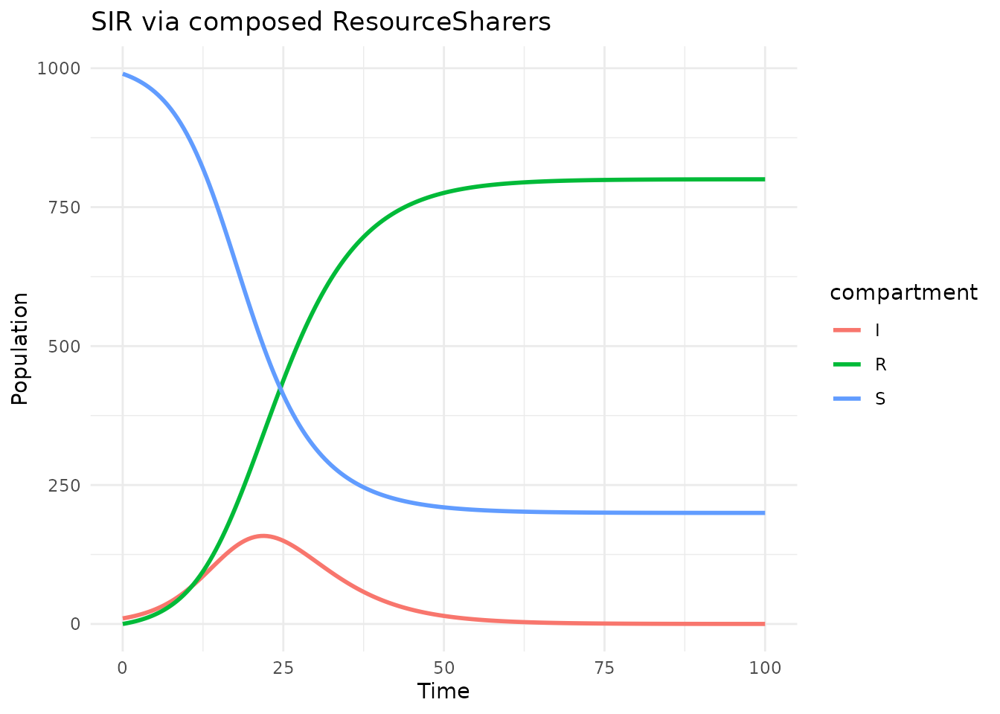
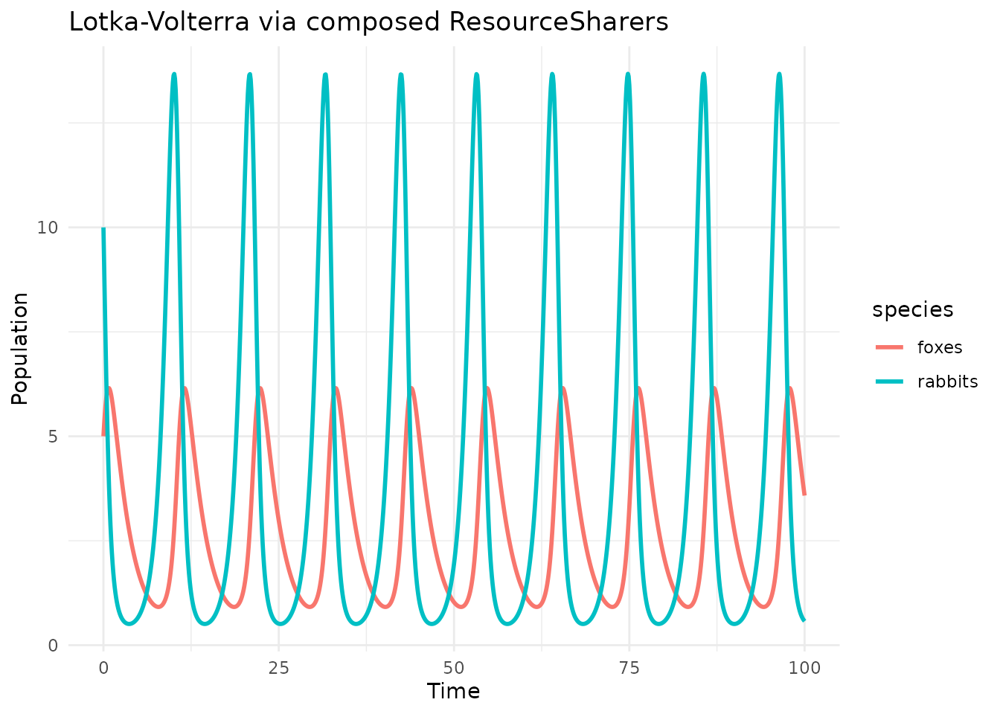
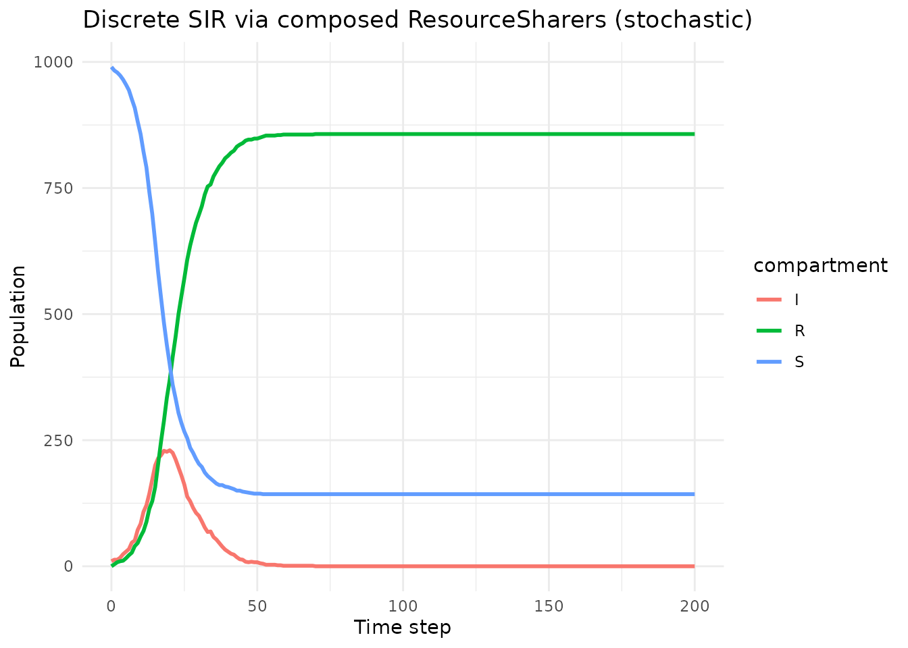
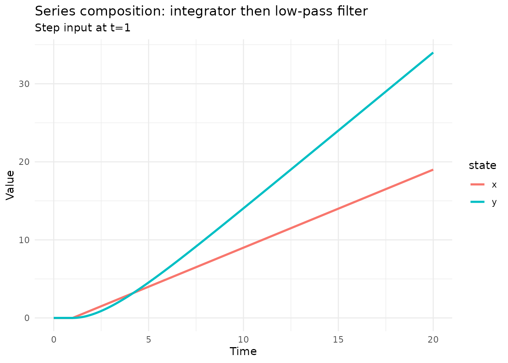
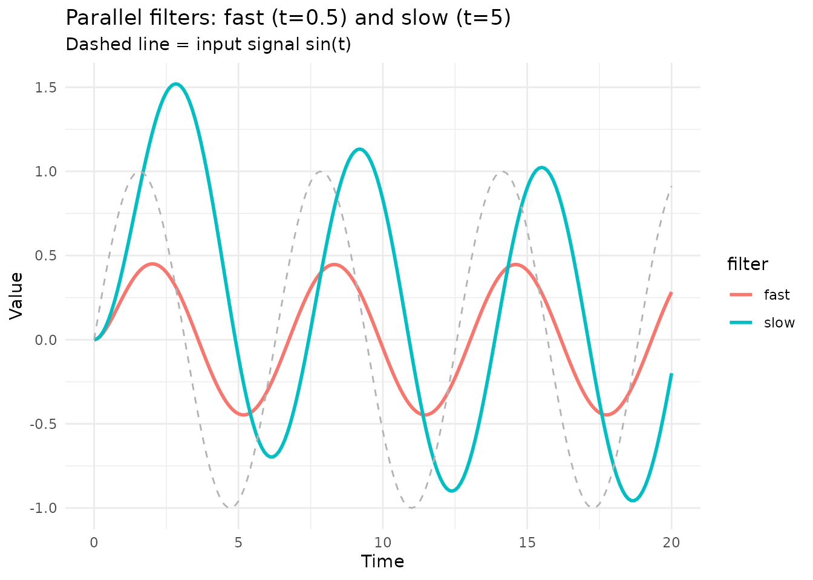

Compositional dynamics: ResourceSharers and Machines
Simon Frost
2026-03-24
Source:vignettes/dynamics.Rmd
dynamics.RmdIntroduction
While Petri nets (see vignette("composition")) are an
excellent formalism for mass-action kinetics, many dynamical systems
don’t fit neatly into the Petri net framework — especially when: - Rate
laws are nonlinear or involve sums like total population N -
The system includes delay differential equations (DDEs)
- You want directed signal flow (inputs and
outputs)
algebraicodin provides two additional formalisms, ported from AlgebraicDynamics.jl:
- ResourceSharers — open dynamical systems with symmetric ports, composed via undirected wiring diagrams (UWDs)
- Machines — open systems with directed inputs/outputs, composed via directed wiring diagrams (DWDs)
library(algebraicodin)
#>
#> Attaching package: 'algebraicodin'
#> The following objects are masked from 'package:base':
#>
#> %o%, %x%
library(catlab)
#>
#> Attaching package: 'catlab'
#> The following object is masked from 'package:algebraicodin':
#>
#> typed_product
library(acsets)
#>
#> Attaching package: 'acsets'
#> The following object is masked from 'package:graphics':
#>
#> arrows
#> The following object is masked from 'package:base':
#>
#> objectsPart 1: ResourceSharers
A ResourceSharer represents an open dynamical system
where some internal states are exposed at ports. When composed,
states at the same port are identified and their dynamics are
summed.
Building an SIR model from two ResourceSharers
Instead of writing the SIR ODE system monolithically, we decompose it into two processes that share state variables:
# Infection process: affects S and I
infection <- continuous_resource_sharer(
nstates = 2L,
dynamics = function(u, p, t) {
beta <- p$beta
foi <- beta * u[1] * u[2]
c(-foi, foi) # dS, dI from infection
},
state_names = c("S", "I")
)
# Recovery process: affects I and R
recovery <- continuous_resource_sharer(
nstates = 2L,
dynamics = function(u, p, t) {
gamma <- p$gamma
c(-gamma * u[1], gamma * u[1]) # dI, dR from recovery
},
state_names = c("I", "R")
)Each component has its own dynamics function with signature
(u, p, t). The portmap (default: identity)
specifies which states are exposed.
Composing via a UWD
We compose these by specifying a wiring diagram that declares which ports (state variables) are shared:
# Three junctions: S, I, R
# Infection uses S and I; Recovery uses I and R
sir_uwd <- uwd(c("S", "I", "R"),
infection = c("S", "I"),
recovery = c("I", "R")
)
plot_uwd(sir_uwd)Now compose:
sir <- oapply_dynam(sir_uwd, list(infection, recovery))
sir@nstates
#> [1] 3
sir@state_names
#> [1] "S" "I" "R"The composed system has 3 states — I is shared between
the two processes, and its derivative is the sum of
contributions from infection (+betaSI) and recovery (-gammaI).
Simulating with deSolve
result <- simulate_rs(sir,
initial = c(S = 990, I = 10, R = 0),
times = seq(0, 100, by = 0.5),
params = list(beta = 0.4 / 1000, gamma = 0.2)
)
head(result)
#> time S I R
#> 1 0.0 990.0000 10.00000 0.000000
#> 2 0.5 987.9221 11.02737 1.050568
#> 3 1.0 985.6362 12.15499 2.208815
#> 4 1.5 983.1233 13.39150 3.485195
#> 5 2.0 980.3629 14.74601 4.891048
#> 6 2.5 977.3332 16.22815 6.438651
library(ggplot2)
df <- tidyr::pivot_longer(result, -time, names_to = "compartment",
values_to = "count")
ggplot(df, aes(x = time, y = count, color = compartment)) +
geom_line(linewidth = 1) +
labs(title = "SIR via composed ResourceSharers",
x = "Time", y = "Population") +
theme_minimal()
Comparing with a direct Petri net model
We can verify the composed ResourceSharer gives the same result as a Petri net:
sir_pn <- labelled_petri_net(
c("S", "I", "R"),
inf = c("S", "I") %=>% c("I", "I"),
rec = "I" %=>% "R"
)
rs_petri <- petri_to_continuous(sir_pn)
# Evaluate at same state
u0 <- c(990, 10, 0)
p_composed <- list(beta = 0.4 / 1000, gamma = 0.2)
p_petri <- list(inf = 0.4 / 1000, rec = 0.2)
du_composed <- sir@dynamics(u0, p_composed, 0)
du_petri <- rs_petri@dynamics(u0, p_petri, 0)
cat("Composed: ", du_composed, "\n")
#> Composed: -3.96 1.96 2
cat("Petri net: ", du_petri, "\n")
#> Petri net: -3.96 1.96 2
cat("Max diff: ", max(abs(du_composed - du_petri)), "\n")
#> Max diff: 0Lotka-Volterra: A non-epidemiological example
ResourceSharers are not limited to disease models. Here’s the classic predator-prey system decomposed into three processes:
# Rabbit growth: dx/dt = alpha*x
rabbit_growth <- continuous_resource_sharer(
nstates = 1L,
dynamics = function(u, p, t) c(p$alpha * u[1]),
state_names = c("rabbits")
)
# Fox death: dy/dt = -gamma*y
fox_death <- continuous_resource_sharer(
nstates = 1L,
dynamics = function(u, p, t) c(-p$gamma * u[1]),
state_names = c("foxes")
)
# Predation: dx/dt = -beta*x*y, dy/dt = delta*x*y
predation <- continuous_resource_sharer(
nstates = 2L,
dynamics = function(u, p, t) {
c(-p$beta * u[1] * u[2], p$delta * u[1] * u[2])
},
state_names = c("rabbits", "foxes")
)
lv_uwd <- uwd(c("rabbits", "foxes"),
growth = c("rabbits"),
death = c("foxes"),
predation = c("rabbits", "foxes")
)
lv <- oapply_dynam(lv_uwd, list(rabbit_growth, fox_death, predation))
lv@nstates
#> [1] 2
lv_result <- simulate_rs(lv,
initial = c(rabbits = 10, foxes = 5),
times = seq(0, 100, by = 0.1),
params = list(alpha = 1.1, beta = 0.4, gamma = 0.4, delta = 0.1)
)
df_lv <- tidyr::pivot_longer(lv_result, -time, names_to = "species",
values_to = "count")
ggplot(df_lv, aes(x = time, y = count, color = species)) +
geom_line(linewidth = 1) +
labs(title = "Lotka-Volterra via composed ResourceSharers",
x = "Time", y = "Population") +
theme_minimal()
Discrete ResourceSharers
The same composition framework supports discrete-time update rules:
# Discrete SIR with step-wise updates
sir_discrete <- oapply_dynam(
uwd(c("S", "I", "R"),
infection = c("S", "I"),
recovery = c("I", "R")
),
list(
discrete_resource_sharer(
nstates = 2L,
dynamics = function(u, p, t) {
new_inf <- rbinom(1, round(u[1]), 1 - exp(-p$beta * u[2]))
c(u[1] - new_inf, u[2] + new_inf)
},
state_names = c("S", "I")
),
discrete_resource_sharer(
nstates = 2L,
dynamics = function(u, p, t) {
new_rec <- rbinom(1, round(u[1]), 1 - exp(-p$gamma))
c(u[1] - new_rec, u[2] + new_rec)
},
state_names = c("I", "R")
)
)
)
disc_result <- simulate_rs_discrete(sir_discrete,
initial = c(S = 990, I = 10, R = 0),
nsteps = 200,
params = list(beta = 0.4 / 1000, gamma = 0.2)
)
df_disc <- tidyr::pivot_longer(disc_result, -time, names_to = "compartment",
values_to = "count")
ggplot(df_disc, aes(x = time, y = count, color = compartment)) +
geom_line(linewidth = 1) +
labs(title = "Discrete SIR via composed ResourceSharers (stochastic)",
x = "Time step", y = "Population") +
theme_minimal()
Part 2: Machines (Directed Composition)
A Machine has explicit input and
output ports. Unlike ResourceSharers (which are
symmetric), Machines have directed signal flow — the output of one
machine feeds the input of another.
Building blocks
# An integrator: dx/dt = input, output = x
integrator <- continuous_machine(
ninputs = 1L, nstates = 1L, noutputs = 1L,
dynamics = function(u, x, p, t) x, # dx/dt = input signal
readout = function(u, p, t) u, # output = state
state_names = c("x")
)
# A filter: dx/dt = -alpha*x + input, output = x
lpf <- continuous_machine(
ninputs = 1L, nstates = 1L, noutputs = 1L,
dynamics = function(u, x, p, t) c(-p$alpha * u[1] + x[1]),
readout = function(u, p, t) u,
state_names = c("y")
)Composing in series via a DWD
# Wire: external_input -> integrator -> filter -> external_output
series_dwd <- dwd(
ninputs = 1L, noutputs = 1L,
boxes = list(c(1, 1), c(1, 1)),
wires = list(
c(0, 1, 1, 1), # external input -> integrator
c(1, 1, 2, 1), # integrator output -> filter input
c(2, 1, -1, 1) # filter output -> external output
)
)
series <- oapply_machine(series_dwd, list(integrator, lpf))
series@nstates
#> [1] 2
series@ninputs
#> [1] 1
series@noutputs
#> [1] 1Simulating with external input
# Drive with a step function input
result_m <- simulate_machine(series,
initial = c(x = 0, y = 0),
times = seq(0, 20, by = 0.1),
input_fn = function(t) c(ifelse(t >= 1, 1, 0)),
params = list(alpha = 0.5)
)
df_m <- tidyr::pivot_longer(result_m, -time, names_to = "state",
values_to = "value")
ggplot(df_m, aes(x = time, y = value, color = state)) +
geom_line(linewidth = 1) +
labs(title = "Series composition: integrator then low-pass filter",
subtitle = "Step input at t=1",
x = "Time", y = "Value") +
theme_minimal()
Parallel machines
# Two independent filters in parallel
parallel_dwd <- dwd(
ninputs = 2L, noutputs = 2L,
boxes = list(c(1, 1), c(1, 1)),
wires = list(
c(0, 1, 1, 1), # ext input 1 -> filter 1
c(0, 2, 2, 1), # ext input 2 -> filter 2
c(1, 1, -1, 1), # filter 1 -> ext output 1
c(2, 1, -1, 2) # filter 2 -> ext output 2
)
)
fast_filter <- continuous_machine(
ninputs = 1L, nstates = 1L, noutputs = 1L,
dynamics = function(u, x, p, t) c(-2 * u[1] + x[1]),
readout = function(u, p, t) u,
state_names = c("fast")
)
slow_filter <- continuous_machine(
ninputs = 1L, nstates = 1L, noutputs = 1L,
dynamics = function(u, x, p, t) c(-0.2 * u[1] + x[1]),
readout = function(u, p, t) u,
state_names = c("slow")
)
parallel <- oapply_machine(parallel_dwd, list(fast_filter, slow_filter))
result_p <- simulate_machine(parallel,
initial = c(fast = 0, slow = 0),
times = seq(0, 20, by = 0.1),
input_fn = function(t) c(sin(t), sin(t)),
params = list()
)
df_p <- tidyr::pivot_longer(result_p, -time, names_to = "filter",
values_to = "value")
ggplot(df_p, aes(x = time, y = value, color = filter)) +
geom_line(linewidth = 1) +
geom_line(aes(y = sin(time)), color = "grey70", linetype = "dashed") +
labs(title = "Parallel filters: fast (t=0.5) and slow (t=5)",
subtitle = "Dashed line = input signal sin(t)",
x = "Time", y = "Value") +
theme_minimal()
Euler approximation
Any continuous system can be converted to discrete-time via forward Euler:
sir_continuous <- oapply_dynam(
uwd(c("S", "I", "R"),
infection = c("S", "I"),
recovery = c("I", "R")
),
list(infection, recovery)
)
sir_euler <- euler_approx(sir_continuous, h = 0.5)
sir_euler@system_type
#> [1] "discrete"
# One step
u0 <- c(990, 10, 0)
p <- list(beta = 0.4 / 1000, gamma = 0.2)
u1 <- sir_euler@dynamics(u0, p, 0)
cat("After one Euler step (h=0.5):", u1, "\n")
#> After one Euler step (h=0.5): 988.02 10.98 1Converting Petri nets to dynamical systems
Any Petri net can be converted to a ResourceSharer for use with
oapply_dynam:
seir_pn <- labelled_petri_net(
c("S", "E", "I", "R"),
inf = c("S", "I") %=>% c("E", "I"),
prog = "E" %=>% "I",
rec = "I" %=>% "R"
)
# Continuous (ODE)
rs_ode <- petri_to_continuous(seir_pn)
cat("Continuous SEIR:", rs_ode@nstates, "states\n")
#> Continuous SEIR: 4 states
# Discrete (stochastic mass-action)
rs_disc <- petri_to_discrete(seir_pn)
cat("Discrete SEIR:", rs_disc@nstates, "states\n")
#> Discrete SEIR: 4 states
# Delay (DDE)
rs_dde <- petri_to_delay(seir_pn)
cat("Delay SEIR:", rs_dde@nstates, "states\n")
#> Delay SEIR: 4 statesSummary
| Formalism | Composition | Use when… |
|---|---|---|
| Petri nets |
oapply() via UWD |
Mass-action kinetics, stoichiometric models |
| ResourceSharers |
oapply_dynam() via UWD |
General ODEs with shared state |
| Machines |
oapply_machine() via DWD |
Directed signal flow, control systems |
All three can target odin2 for high-performance simulation, or be simulated directly via deSolve.